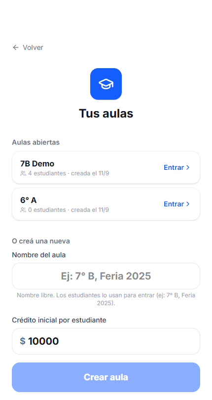
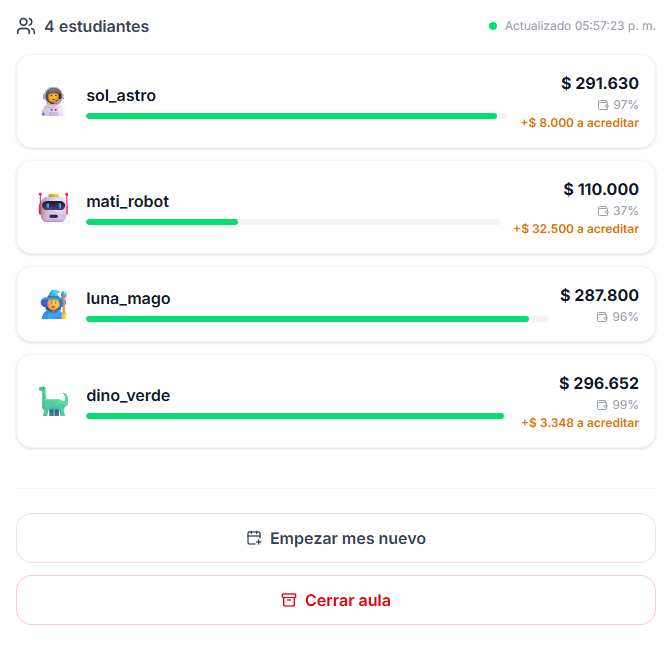
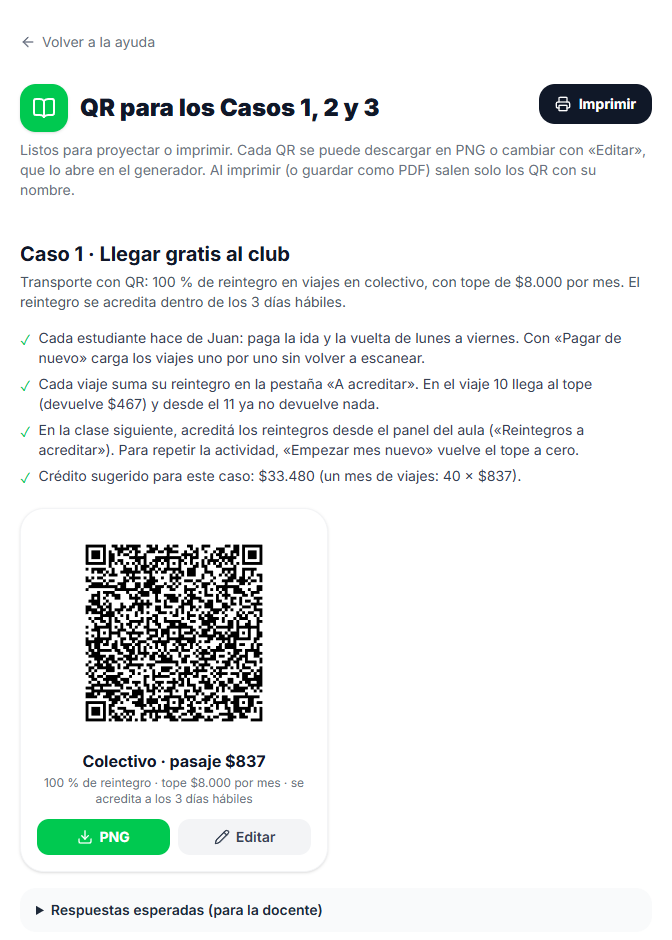
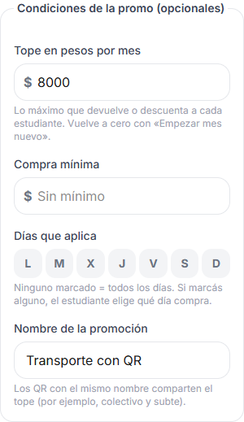
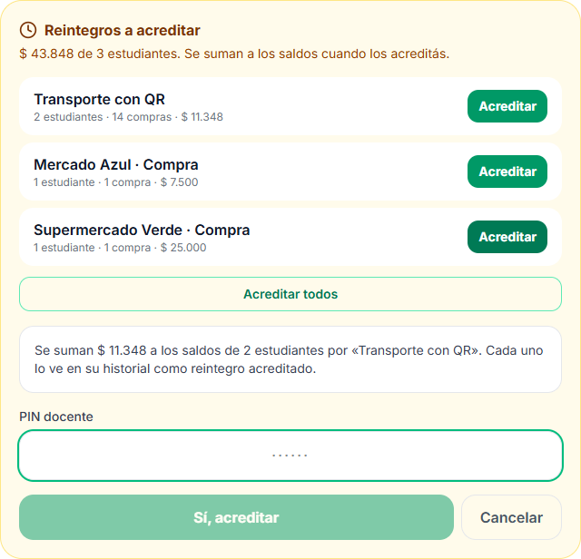
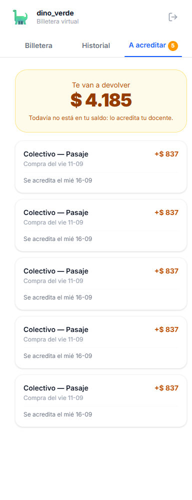
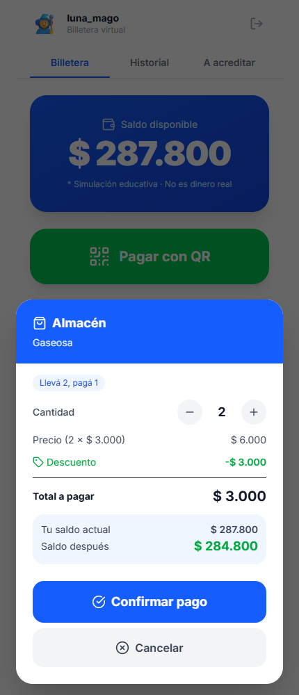

¿Qué vas a encontrar?
- Qué es (y qué no es) esta app
- Antes de la clase: checklist
- Entrar y crear el aula
- Que entren los estudiantes
- El panel del aula
- QR listos para los Casos 1, 2 y 3
- Armar tus propios QR
- Tipos de promo y condiciones
- Reintegros que acreditás vos y mes nuevo
- Armar los cartelitos e imprimirlos
- Qué ve y qué hace el estudiante
- Cuando algo sale mal
- Cerrar la actividad y reflexionar
- Preguntas frecuentes
1 · Qué es (y qué no es) esta app
- Es un simulador de billetera virtual: cada estudiante recibe un crédito ficticio y "paga" escaneando los QR de los comercios que vos armás.
- No es dinero real, no hay pasarela de pago, no se conecta con ningún banco ni con Mercado Pago.
- No se piden datos personales. Cada chico entra con un apodo (usuario), una contraseña de la actividad y un avatar. Nada más.
- Se usa desde el celular o la tablet de cada estudiante (para escanear con la cámara) y desde tu compu o el proyector para el panel del aula.


2 · Antes de la clase: checklist
- ☐ Tenés a mano el PIN docente (está acá abajo).
- ☐ Decidiste el crédito inicial por estudiante: $10.000 alcanza para una feria de 40 minutos; si van a trabajar los Casos 1, 2 y 3, poné $300.000 (el Caso 2 simula una compra de $200.000).
- ☐ Tenés los QR: los de los Casos 1, 2 y 3 ya están listos (punto 6); si armás los tuyos, usá el generador (punto 7). Probalos escaneando con un celular.
- ☐ Los chicos saben que van a necesitar inventar un usuario y una contraseña y recordarlos durante la clase —y en la clase siguiente, si la actividad sigue—.
- ☐ Abriste la app unos minutos antes: la primera carga del día puede tardar unos segundos.
http://192.168... o localhost, el celular no deja abrir la cámara.3 · Entrar y crear el aula NUEVO
- Entrá a la app y tocá “Soy docente”.
- Ingresá el PIN docente (ba2026) y tocá Continuar. Si te equivocás, avisa “PIN incorrecto”.
- Aparece “Tus aulas”: arriba, las aulas abiertas con cuántos estudiantes tiene cada una y el botón Entrar. Así volvés a un aula que creaste otro día, con los saldos y el historial como quedaron.
- Para una nueva, abajo: escribí el nombre del aula (texto libre: 7° B, Feria 2026) y el crédito inicial por estudiante, y tocá Crear aula. Ese nombre es lo que los chicos van a escribir para entrar.


4 · Que entren los estudiantes
- Dos caminos: escanear el QR “Escaneá para unirte al aula” que aparece en tu panel (proyectalo), o entrar a la app, tocar “Soy estudiante” y escribir el nombre del aula.
- Cada estudiante completa: usuario (hasta 20 caracteres), contraseña y avatar.
- La contraseña tiene que cumplir 4 reglas —la pantalla las va marcando en verde—:
| Regla | Ejemplo válido | Ejemplo que falla |
|---|---|---|
| Entre 6 y 8 caracteres | Dino2026 Sol12Ab | Ab1 (muy corta) |
| Al menos una minúscula | DINO2026 | |
| Al menos una mayúscula | dino2026 | |
| Al menos un número | DinoVerde |
- La primera vez que entran se les crea el perfil con el crédito inicial. Las veces siguientes entran con el mismo usuario y contraseña y recuperan su saldo, su historial y lo que tienen a acreditar.
- El usuario es por aula: el mismo apodo en dos aulas distintas son dos perfiles distintos, cada uno con su propio saldo.
- El avatar se elige solo al crear el perfil; después ya no se cambia.

5 · El panel del aula NUEVO
- Es la pantalla del aula. Proyectala: se actualiza sola cada 5 segundos, no hace falta refrescar.
- Arriba: el nombre del aula, el crédito inicial, el mes simulado (punto 9) y el botón Ajustar créditos.
- El QR para unirse, y dos botones: Generar QR de productos y QR de los Casos 1, 2 y 3.
- Reintegros a acreditar (aparece solo si hay): cuánto espera cada promo y el botón para acreditarlo (punto 9).
- La lista de estudiantes: avatar, apodo, saldo, una barra con cuánto les queda del crédito inicial y, en naranja, lo que tienen a acreditar.
- Al final: Empezar mes nuevo (punto 9) y Cerrar aula.


| Botón | Qué hace |
|---|---|
| Ajustar créditos | Dos cosas independientes: cambiar el crédito inicial (vale para los que entren de ahora en más) y sumar un monto a los saldos actuales de todos (con un número negativo resta; nunca deja un saldo por debajo de $0). Pide el PIN. |
| Cerrar aula | Los estudiantes dejan de poder entrar y el aula sale de tu lista. Los saldos y el historial quedan guardados y el nombre se libera para usarlo de nuevo. No se puede reabrir desde la app. Pide el PIN. |
6 · QR listos para los Casos 1, 2 y 3 NUEVO
Desde el panel, QR de los Casos 1, 2 y 3 abre una página con los 11 QR de la secuencia, con la consigna de cada caso, consejos para la clase y las respuestas esperadas (desplegables, para vos).
| Caso | QR | Cómo se juega en la app |
|---|---|---|
| 1 · Llegar gratis al club | Colectivo, pasaje $837: 100 % de reintegro, tope $8.000 por mes, se acredita a los 3 días hábiles. | Cada chico hace de Juan y paga los viajes uno por uno con “Pagar de nuevo”. Ve cómo el reintegro se acumula en “A acreditar” hasta el tope: 9 viajes enteros, $467 del décimo y nada después. |
| 2 · De compras | Supermercado Verde (20 %, mínimo $100.000, tope $25.000) y Mercado Azul (15 %, solo viernes, mínimo $30.000). | Son de monto libre: escriben cuánto es la compra ($200.000 o $50.000) y, en Mercado Azul, eligen qué día la hacen. Un martes, la app les muestra que la promo no aplica. |
| 3 · ¡Ayuda! | Cuatro productos del almacén, cada uno con dos promos: 2x1 o 50 %, 3x2 o 2x1, 25 % o 50 % en la 2.ª, 25 % o 70 % en la 2.ª. | Eligen la cantidad al pagar y comparan. Conviene probar con 1, 2 y 3 unidades. |
- Cada QR se descarga en PNG, y Imprimir saca la página entera (o la guarda en PDF) con solo los QR y sus nombres.
- Editar abre ese QR en el generador, ya cargado, para cambiarle el precio o una condición. Los precios del Caso 3 son de ejemplo (la consigna solo da la gaseosa a $3.000).
- La vigencia que figura (“hasta el 31/05/2026”) es la de la consigna: se muestra pero no se controla, así que la promo funciona igual.

7 · Armar tus propios QR NUEVO
- Desde el panel (o desde Ayuda), Generar QR de productos.
- Completás comercio, producto y precio —fijo, o monto libre para que el estudiante escriba cuánto gasta—, el tipo de operación y el beneficio.
- En un reintegro elegís cuándo se acredita: al instante, o lo acreditás vos (queda en “A acreditar” hasta que lo liberes).
- En Condiciones de la promo (opcionales): tope en pesos por mes, compra mínima, días en que aplica y un nombre de promoción.
- El QR se dibuja al instante; lo bajás con Descargar QR (PNG). Se genera dentro de la app, sin mandar nada a ningún servicio externo.


comercio=… precio=…, está bien armado.¿Qué tiene adentro el QR? Texto plano, una línea por dato. Si preferís usar un generador online de QR de texto, respetá este formato (este es el colectivo del Caso 1):
comercio=Colectivo producto=Pasaje precio=837 promo=100 modo=porcentaje tipo=reintegro acreditacion=pendiente plazo=3 promocion=Transporte con QR tope_pesos=8000
| Campo | ¿Obligatorio? | Qué hace |
|---|---|---|
precio | Sí | Pesos simulados, número entero sin puntos. O libre: el estudiante escribe el monto al pagar. |
comercio · producto | No | Texto libre. Si faltan, dice “Comercio” y “Producto”. |
tipo | No | normal · descuento · reintegro · nxm (llevá N, pagá M) · segunda (% en la 2.ª unidad). Por defecto normal. |
modo · promo | No | porcentaje o monto, y el valor del beneficio. |
lleva · paga | Con nxm | 2 y 1 es un 2x1; 3 y 2, un 3x2. |
tope_pesos | No | Lo máximo que devuelve o descuenta a cada estudiante en el mes simulado. |
minimo | No | Compra mínima para que aplique la promo. |
dias | No | Letras L M X J V S D (ej. V = solo los viernes). El estudiante elige qué día compra. |
acreditacion · plazo | No | pendiente: el reintegro lo acreditás vos. plazo: días hábiles que muestra la app como fecha de llegada. |
promocion | No | Nombre de la promo. Los QR con el mismo nombre comparten el tope en pesos (ej. colectivo y subte en “Transporte con QR”). |
tope | No | Cuántas veces puede usar esa promo cada estudiante. |
modalidad · vigencia · condiciones | No | Se muestran al pagar, pero no se controlan. |
8 · Tipos de promo y condiciones NUEVO
| Tipo | Qué pasa | Ejemplo |
|---|---|---|
| Pago simple | Se descuenta el precio, sin beneficio. | Viaje $837 → paga $837 |
| Descuento % | Paga el precio menos el porcentaje. | Gaseosa $3.000 con 50 % → paga $1.500 |
| Descuento $ | Paga el precio menos un monto fijo por unidad. | Combo $5.000 menos $1.000 → paga $4.000 |
| Reintegro % | Paga todo y le vuelve un porcentaje (al instante, o cuando lo acredites vos). | Súper $200.000 con 15 % → le vuelven $30.000 |
| Reintegro $ | Paga todo y le vuelve un monto fijo por unidad. | Entrada $8.000 con $1.500 → recupera $1.500 |
| Llevá N, pagá M | Por cada N unidades, paga M. Con menos de N unidades no aplica. | 2x1, 2 gaseosas de $3.000 → paga $3.000 |
| % en la 2.ª unidad | Descuenta el % en cada segunda unidad. Con 1 sola no aplica. | 70 % en la 2.ª, 2 papeles de $4.000 → paga $5.200 |
Las condiciones se combinan con cualquier promo:
- Compra mínima: si no llega, paga igual, sin beneficio, y la app le explica por qué.
- Días: el estudiante elige qué día hace la compra. Si no es un día de la promo, paga sin beneficio. Los días válidos se ven en verde.
- Tope en pesos: se cuenta por estudiante y por promo dentro del mes simulado. El pago que lo cruza recibe solo lo que falta; después, $0. Vuelve a cero con “Empezar mes nuevo”.
- Tope de usos: cuenta en cualquier promo (no en el pago simple) y por combinación exacta de comercio + producto + precio + beneficio. Cuando un chico llega al tope, la app le ofrece pagar sin la promo o cancelar. Este no se reinicia con el mes nuevo.
9 · Reintegros que acreditás vos y mes nuevo NUEVO
En la vida real, muchos reintegros llegan días después de la compra. La app lo simula así:
- El estudiante paga con un QR de reintegro que acreditás vos (como el colectivo o los súper del kit). Paga el precio completo y el reintegro no entra a su saldo: queda en la pestaña “A acreditar”, con la fecha en que llegaría (días hábiles, sin contar feriados).
- En tu panel aparece “Reintegros a acreditar”: cuánto espera cada promo y de cuántos estudiantes.
- Cuando quieras —por ejemplo, en la clase siguiente—, tocá Acreditar en una promo (solo los que usaron esa promo, como la de viajes) o Acreditar todos. Te pide el PIN y te dice cuánto se va a sumar.
- Cada estudiante ve el saldo subir y en su historial aparece un “Reintegro acreditado”. Aunque toques dos veces, no se acredita doble.


El mes simulado. Los topes “por mes” (los $8.000 del transporte, los $25.000 del súper) se cuentan dentro del mes simulado del aula, que ves en el panel. Para repetir la actividad o pasar “al mes siguiente”, tocá Empezar mes nuevo al final del panel: los topes en pesos vuelven a cero para todos. No cambia saldos, historial ni reintegros pendientes.
10 · Armar los cartelitos e imprimirlos
- Tamaño: mínimo 5 × 5 cm el QR; los que llevan muchas condiciones (como los súper del Caso 2) son más densos: mejor 7 × 7 cm. Si el puesto va a tener fila, 8 × 8 cm.
- Contraste: negro sobre blanco. Nada de logos, dibujos ni texto encima del código, y dejale el margen blanco alrededor (el generador ya lo agrega).
- Debajo del QR, en letra grande: comercio, producto, precio y la promo escrita en castellano (“2x1”, “te devolvemos el 15 % los viernes”). Que puedan anticipar la cuenta antes de escanear es parte de la actividad.
- Una hoja por puesto funciona mejor que muchos QR juntos: evita que el celular lea el de al lado.
- Si los vas a reusar en varios cursos, plastificalos. Y guardá los PNG: se reimprimen igual.
- También se pueden proyectar en el pizarrón, de a uno por vez.
11 · Qué ve y qué hace el estudiante NUEVO
- Entra al aula y ve su saldo en grande, con la aclaración de que es una simulación.
- Toca “Pagar con QR” → se abre la cámara → apunta al cartelito.
- Antes de descontar nada, ve una ventana con el detalle: las condiciones de la promo, el precio, el descuento o reintegro y con cuánto saldo queda. Según el QR, además:
- elige la cantidad (con − y +),
- escribe el monto de la compra, si es de monto libre,
- elige qué día hace la compra, si la promo es de ciertos días.
- Al confirmar ve el aviso “¡Pago realizado!”. Aparece “Pagar de nuevo” para repetir la misma compra sin volver a escanear (los viajes del Caso 1).
- Tiene tres pestañas: Billetera, Historial (todos sus movimientos, con cantidad, beneficio y saldo resultante, y los reintegros acreditados) y A acreditar (lo que le van a devolver y cuándo).




12 · Cuando algo sale mal
| Lo que ven en pantalla | Qué pasó / qué hacer |
|---|---|
| “Necesitamos acceso a la cámara para leer el QR” | El celular pidió permiso y se rechazó. Volver a entrar y tocar Permitir; si no aparece, revisar los permisos del navegador. |
| “No se pudo iniciar la cámara” | Casi siempre entraron por una dirección insegura. Que usen el enlace oficial (https) del punto 1. |
| El botón dice “Escribí el monto” o “Elegí el día” | Es un QR de monto libre o de ciertos días: falta completar eso en la ventana para poder confirmar. |
| “La promo no se aplica: …” | No es un error: la compra se puede hacer, pero sin beneficio, y la app explica el motivo. Buen disparador para charlar. |
| “El precio del QR no es válido” | El QR se armó sin precio o con un precio no numérico. Rehacerlo desde el generador. |
| “No se pudo leer la promoción” | El tipo o el modo están mal escritos (ej. tipo=descuentos), o un 2x1 no tiene bien lleva/paga. Ojo si lo escribiste a mano. |
| “Saldo insuficiente…” | No le alcanza. No se descuenta nada. Usalo como disparador: ¿qué resigna? ¿busca una promo mejor? Si hace falta, “Ajustar créditos” suma a todos. |
| “Alcanzaste el límite de esta promoción” | Llegó al tope de usos. Puede pagar el precio completo o cancelar. |
| “No encontramos esa aula…” | El nombre del aula está mal escrito (fijate en espacios, tildes y el símbolo °), o el aula ya se cerró. |
| “Usuario o contraseña incorrectos” | Ese apodo ya existe en el aula con otra contraseña. Que pruebe de nuevo o elija otro apodo. |
| La cámara no engancha el código | Más luz, menos reflejo (los plastificados brillan), pulso firme y el QR entero dentro del recuadro. Si es un QR con muchas condiciones, imprimilo más grande. |
13 · Cerrar la actividad y reflexionar
- Antes de terminar, pediles que abran el Historial y calculen cuánto gastaron en total, cuánto les devolvieron y cuánto les queda por acreditar.
- Preguntas que funcionan: ¿qué promo convino más? ¿Un 20 % con tope es mejor que un 15 % sin tope? ¿Un 2x1 conviene si solo necesitás una unidad? ¿Un reintegro es lo mismo que un descuento, si te quedaste sin plata en el momento?
- Los que se quedaron sin saldo son el mejor caso para discutir prioridades y presupuesto.
- Comparen el panel proyectado: por qué dos chicos con el mismo crédito inicial terminaron tan distinto.
14 · Preguntas frecuentes
- ¿Cómo vuelvo a un aula que creé otro día? Entrás con el PIN y la elegís de la lista de aulas abiertas.
- ¿Cuántos estudiantes entran en un aula? No hay límite fijado. Un curso entero funciona sin problema.
- ¿Necesitan instalar algo? No. Se abre en el navegador del celular. Tampoco hace falta que tengan cuenta de mail.
- ¿Y si un chico no tiene celular? Que trabajen de a dos, o que uno escanee y el otro haga la cuenta. La discusión en parejas suele rendir más.
- ¿Se puede quedar con saldo negativo? No: si no le alcanza, la operación se rechaza.
- ¿Puedo darle más crédito durante la clase? Sí, con Ajustar créditos: suma el mismo monto a todos los del aula.
- ¿El reintegro se acredita solo a los 3 días? No: la fecha es la que mostraría una billetera real, pero el reintegro llega cuando lo acreditás vos desde el panel.
- ¿El tope “por mes” se reinicia solo? No: vuelve a cero cuando tocás “Empezar mes nuevo”.
- ¿Puedo reusar el mismo nombre de aula? Sí, después de cerrar la anterior desde su panel.
- ¿El PIN es distinto para cada docente? No: es uno solo para toda la escuela (ba2026). Los chicos no lo necesitan nunca. Si hiciera falta cambiarlo, lo cambia el referente técnico.
- ¿Se guardan datos de los chicos? Solo el apodo que inventaron, el avatar, el saldo y los movimientos de la simulación. Nada de nombre real, mail ni documento.
- ¿Y si se corta internet? Sin conexión no se puede escanear ni actualizar saldos. Tené a mano una versión en papel de la consigna por las dudas.